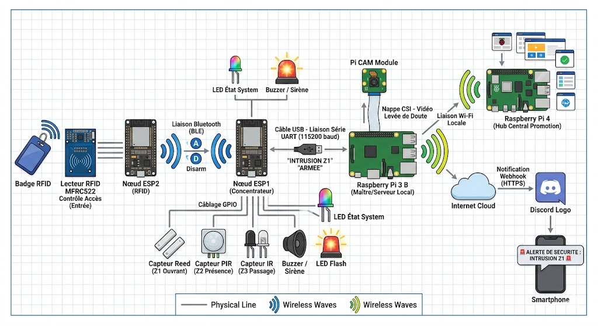
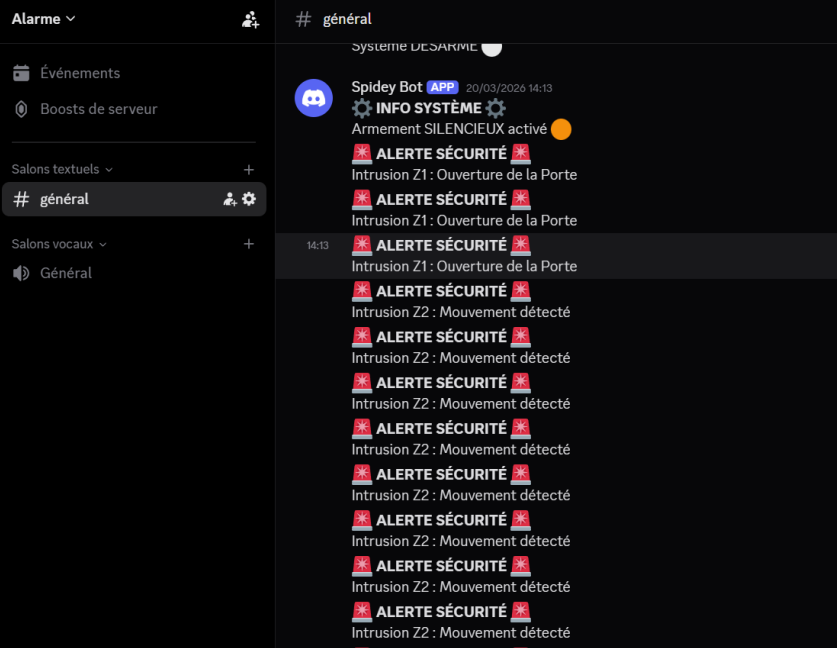

Centrale d'Alarme IoT Multi-Zones
Conception et prototypage d'un système de sécurité domestique complet. Ce projet intègre des capteurs décentralisés, un réseau hybride (Bluetooth, Série, Wi-Fi), un serveur local sous Raspberry Pi, une interface Web de contrôle et un système d'alerte en temps réel via Discord.
01. Contexte & Intégration Matérielle
Réalisé dans le cadre de la SAÉ 6.IOM.01 du BUT Réseaux et Télécommunications, l'objectif était de concevoir un objet connecté "commercialisable". Au-delà du code, le défi résidait dans l'intégration physique et la gestion de projet (budget, diagramme de Gantt).
- Détection Multi-niveaux : Surveillance périmétrique (Capteur magnétique Reed), volumétrique (PIR) et de passage (Barrière Infrarouge).
- Contrôle d'accès : Lecteur de badge RFID (MFRC522) placé à l'entrée.
- Intégration "Invisible" : Dissimulation de toute l'électronique et des câbles dans des meubles miniatures modélisés et imprimés en 3D pour un rendu esthétique parfait.
 maison.
maison.
02. Architecture Réseau Décentralisée
Plutôt que d'utiliser un seul microcontrôleur surchargé, le système s'appuie sur une architecture hybride à trois niveaux pour garantir sécurité et faible latence :
- Le Front-End Physique (Bluetooth) : Le lecteur RFID (ESP2) communique exclusivement en Bluetooth Low Energy (BLE) avec la centrale. Cela permet de déporter le contrôle d'accès sans tirer de câbles.
- Le Concentrateur (Liaison Série) : L'ESP1 centralise l'état des capteurs (GPIO) et transmet les données au Raspberry Pi via une liaison série filaire (USB - UART à 115200 bauds), garantissant zéro perte de paquets due aux interférences sans fil.
- Le Back-End Serveur (Wi-Fi) : Le Raspberry Pi 3 agit comme chef d'orchestre. Il gère la base de données SQLite, héberge l'interface Web et pousse les alertes vers le Cloud (API Discord) via le réseau Wi-Fi local.

synoptique.03. Interface Web & Système d'Alertes
L'expérience utilisateur a été pensée pour être moderne, réactive et accessible depuis n'importe quel smartphone connecté au réseau local.
- Serveur Web Flask : Création d'un dashboard interactif en HTML/CSS/JS communiquant avec le back-end Python via des requêtes AJAX dynamiques (chemins relatifs).
- Gestion des états : Possibilité d'armer, désarmer ou activer un "Mode Silencieux" (alertes sans sirène physique).
- Webhooks Discord : Implémentation d'un script Python capable de parser les trames séries en temps réel et de déclencher une requête HTTP POST vers l'API Discord en cas d'intrusion détectée.

discord.04. Défis Techniques & Débogage
La véritable valeur ajoutée de ce projet réside dans la résolution de conflits complexes entre le matériel (hardware) et le logiciel (software) en conditions réelles :
- Le "Boot Loop" des ESP32 : L'ESP crachait au démarrage (erreur
rtc_reset). Après investigation, le problème venait de l'utilisation des Strapping Pins (broches dictant le mode de boot). Solution : Réallocation logicielle et matérielle vers des GPIO neutres (ex: D21 pour le bus SPI du RFID). - Le Reset Série intempestif : Chaque fois que le script Python initiait la communication USB, l'ESP32 redémarrait. Problème contourné en désactivant le signal DTR directement dans le script backend (
ser.setDTR(False)). - Logique matérielle inversée (Active Low) : Face à une erreur de câblage difficilement accessible sous la maquette, création d'un patch logiciel dans le code C++ inversant l'état logique de la LED stroboscopique au lieu de démonter l'infrastructure.
 Cable.
Cable.
05. Bilan & Améliorations Futures
Au-delà de la note, ce projet m'a confronté à la réalité du terrain : la théorie informatique fonctionne rarement du premier coup face aux aléas physiques (chutes de tension, faux contacts vibratoires, instabilité des broches).
udev Linux pour verrouiller dynamiquement l'attribution des ports USB.